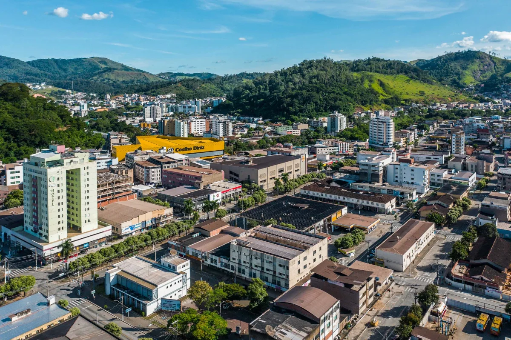
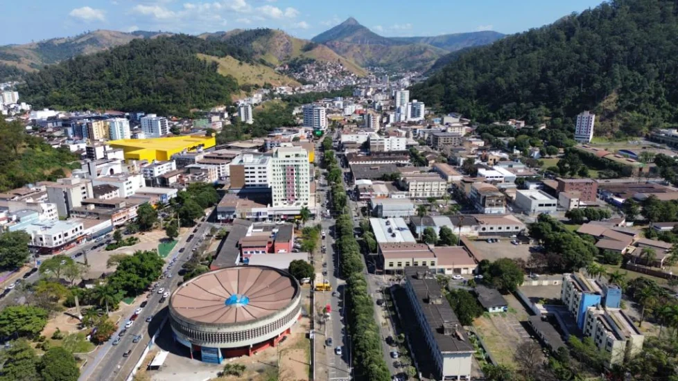

Patrimônio também se vive no caminho
Os caminhos que moldaram uma cidade.
Uma rota urbana que conecta os principais patrimônios de Timóteo por meio de um elemento contínuo no espaço urbano: o Veio.
Uma cidade formada por
Território, trabalho e pessoas.
Timóteo nasceu do encontro entre o seu território e a indústria. A chegada da Acesita, em 1944, transformou o antigo povoado em uma cidade, trazendo moradia, escola, lazer e fé.
A rota Veios de Timóteo convida você a percorrer esses caminhos e conhecer os patrimônios que contam essa história.
Timóteo em números
Uma cidade moldada pela indústria
A história de Timóteo está profundamente ligada à industrialização do Vale do Aço. A fundação da Acesita, em 1944, marcou uma transformação importante no município, impulsionando a construção de moradias, escolas, espaços de convivência e infraestrutura para acompanhar o crescimento da população.
Essa influência pode ser percebida em diversos pontos da rota, como a Igreja São José, a antiga Escola Técnica de Metalurgia, a Fundação Aperam e outros espaços ligados à memória da cidade.
Uma cidade além da indústria
Embora a siderurgia tenha sido fundamental para a formação de Timóteo, a identidade do município também é construída por sua religiosidade, cultura, arquitetura, educação, natureza e memória comunitária.
É justamente essa diversidade que a rota busca apresentar: uma cidade que cresceu com a indústria, mas que possui uma história muito maior do que ela.
Os veios de Timóteo
Mapa da rota
Acesse cada ponto e viva a cidade em diferentes épocas.
- Trajeto da rota
- Patrimônios
A intervenção urbana
Em desenvolvimento.

“Timóteo é feita de pessoas, de trabalho e de lugares que contam uma história em comum. O Veio é o que liga tudo isso.”